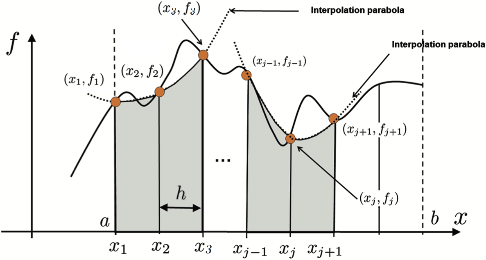

\(dx_i\) is the lenght of some subset of \([a,b]\)
\(x_i\) is some evaluation point (e.g. midpoint of \(dx_i\))
Infinite limits strike again
Just like derivatives, we face an infinite limit because as \({dx_i} \rightarrow 0\), \(\frac{(a-b)}{dx_i} \rightarrow \infty\)
We avoid this issue in the same way as derivatives: we replace the infinite sum with something we can handle
We will see two types of methods:
Stochastic approximation with Monte Carlo
Quadrature
Monte Carlo integration
It’s probably the most commonly used form in empirical economics
Key idea: approximate an integral by relying on LLN and “randomly”sampling the integration domain
Can be effective for very-high-dimensional integrals
Very simple and intuitive
But produces a random approximation
Monte Carlo integration
We integrate \[
\xi = \int_0^1 f(x) dx
\]
by drawing \(N\) uniform samples, \(x_1,\dots,x_N\) over interval \([0,1]\)
\(\xi\) is equivalent to \(E[f(x)]\) with respect to a uniform distribution, so estimating the integral is the same as estimating the expected value of \(f(x)\)
In general we have that \(\hat{\xi} = V\frac{1}{N}\sum_{i=1}^N f(x_i)\), where \(V\) is the volume over which we are integrating
LLN gives us that the \(plim_{N\rightarrow\infty} \hat{\xi} = \xi\)
Monte Carlo integration
The variance of \(\hat{\xi}\) is \[\sigma^2_{\hat{\xi}} = Var(\frac{V}{N}\sum_{i=1}^N f(x_i)) = \frac{V^2}{N^2} \sum_{i=1}^N Var(f(X)) = \frac{V^2}{N}\sigma^2_{f(X)}\]
So average error is \(\frac{V}{\sqrt{N}}\sigma_{f(X)}\). Yhis gives us its rate of convergence: \(O(\sqrt{N})\)
Notes:
The rate of convergence is independent of the dimension of x
Quasi-Monte Carlo methods can get you \(O(1/N)\)
Monte Carlo integration
Suppose we want to integrate \(x^2\) from 0 to 10, we know this is \(10^3/3 = 333.333\)
# Package for drawing random numbersusingDistributions# Define a function to do the integration for an arbitrary functionfunctionintegrate_mc(f, lower, upper, num_draws)# Draw from a uniform distribution xs =rand(Uniform(lower, upper), num_draws)# Expectation = mean(x)*volume expectation =mean(f(xs))*(upper - lower)end
integrate_mc (generic function with 1 method)
Monte Carlo integration
Suppose we want to integrate \(x^2\) from 0 to 10, we know this is \(10^3/3 = 333.333\)
f(x) = x.^2;integrate_mc(f, 0, 10, 1000)
348.1121709745394
Quite close for a random process!
Quadrature rules
We can also approximate integrals using a technique called quadrature
With quadrature we effectively take weighted sums to approximate integrals
We will focus on two classes of quadrature for now:
Newton-Cotes (the kind you’ve seen before)
Gaussian (probably new)
Newton-Cotes quadrature rules
Suppose we want to integrate a one dimensional function \(f(x)\) over \([a,b]\)
How would you do it?
One answer is to replace the function with something easier to integrate: a piece-wise polynomial
Key things to define up front:
\(x_i = a + (i-1)/h\) for \(i=1,2,...,n\) where \(h = \frac{b-a}{n-1}\)
\(x_i\)s are the quadrature nodes of the approximation scheme and divide the interval into \(n-1\) evenly spaced subintervals of length \(h\)
Midpoint rule
Most basic Newton-Cotes method:
Split \([a,b]\) into intervals
Approximate the function in each subinterval by a constant equal to the function at the midpoint of the subinterval
Let’s integrate \(x^2\) again from \(0\) to \(100\) (the answer is 333.33…)
# Generic function to integrate with midpointfunctionintegrate_midpoint(f, a, b, N)# Calculate h given the interval [a,b] and N nodes h = (b-a)/(N-1)# Calculate the nodes starting from a+h/2 til b-h/2 x =collect(a+h/2:h:b-h/2)# Calculate the expectation expectation =sum(h*f(x))end;
Midpoint rule: let’s code it up
f(x) = x.^2;println("Integrating with 5 nodes:$(integrate_midpoint(f, 0, 10, 5))")println("Integrating with 50 nodes:$(integrate_midpoint(f, 0, 10, 50))")println("Integrating with 100 nodes:$(integrate_midpoint(f, 0, 10, 100))")
Integrating with 5 nodes:328.125
Integrating with 50 nodes:333.29862557267813
Integrating with 100 nodes:333.3248307995783
Decent approximation with only 5 nodes. We get pretty close to the answer once we move up to 100 nodes.
Trapezoid rule
Increase complexity by 1 degree:
Split \([a,b]\) into intervals
Approximate the function in each subinterval by a linear interpolation passing through \((x_i,f(x_i))\) and \((x_{i+1},f(x_{i+1}))\)
where \(w_1=w_n = h/3\), otherwise and \(w_i = 4h/3\) if \(i\) is even and \(w_i = 2h/3\) if \(i\) is odd
Simpson’s rule

How accurate is this rule?
Simpson’s rule is \(O(h^4)\) and third-order exact: it can integrate any cubic function exactly
That’s weird! Why do we gain 2 orders of accuracy when increasing one order of approximation complexity?
The approximating piecewise quadratic is exact at the end points and midpoint of the conjoined two subintervals
The difference between a cubic \(f(x)\) and the quadratic approximation in \([x_{2i-1},x_{2i+1}]\) is another cubic function
This cubic function is odd with respect to the midpoint \(\rightarrow\) integrating over the first subinterval cancels integrating over the second subinterval
Note on accuracy
The derivation of the order of error terms is similar to what we did for forward differences: we use Taylor expansions
But there are some extra steps because we have to bring the integral in. We’re going to skip these derivations
BUT it is important to know that these derivations assume smooth functions. That might not be the case in economic models because corner solutions might exist!
Simpson’s is more accurate than the trapezoid rule for smooth functions
But for functions with kinks/discontinuities in the 1st derivative, the trapezoid rule is often more accurate than Simpson’s
Higher order integration
We can generalize the unidimensional Newton-Cotes quadrature with tensor products
We compute separately the \(n_1\) nodes and weights \((x_{1i}, w_{1i})\) and \(n_2\) for \((x_{2j}, w_{2j})\). The tensor product will give us a grid with \(n = n_1 n_2\) points
We can use the same idea for 3+ dimensions. But the number of points increases very quickly: curse of dimensionality
Gaussian quadrature rules
How did we pick the \(x_i\) quadrature nodes for Newton-Cotes rules?
Evenly spaced, but no particular reason for doing so…
Gaussian quadrature selects these nodes more efficiently and relies on weight functions\(w(x)\)
Gaussian quadrature rules
Gaussian rules try to exactly integrate some finite dimensional collection of functions (i.e. polynomials up to some degree)
For a given order of approximation \(n\), the weights \(w_1,...,w_n\) and nodes \(x_1,...,x_n\) are chosen to satisfy \(2n\)moment matching conditions:
where \(I\) is the interval over which we are integrating and \(w(x)\) is a given weight function
Gaussian quadrature improves accuracy
The moment matching conditions pin down \(w_i\)s and \(x_i\)s so we can approximate an integral by a weighted sum of the function at the prescribed nodes
Gaussian rules are \(2n-1\) order exact: we can exactly compute the integral of any polynomial order \(2n-1\)
Gaussian quadrature takeaways
Gaussian quadrature effectively discretizes some distribution \(p(x)\) into mass points (nodes) and probabilities (weights) for some other discrete distribution \(\bar{p}(x)\)
Given an approximation with \(n\) mass points, \(X\) and \(\bar{X}\) have identical moments up to order \(2n\)
As \(n\rightarrow\infty\) we have a continuum of mass points and recover the continuous pdf
But what do we pick for the weighting function \(w(x)\)?
Gauss-Legendre
We can start out with a simple \(w(x) = 1\): this gives us Gauss-Legendre quadrature
This can approximate the integral of any function arbitrarily well by increasing \(n\)
Gauss-Laguerre
Sometimes we want to compute exponentially discounted sums like
\[
\int_I f(x) e^{-x} dx
\]
The weighting function \(e^{-x}\) is Gauss-Laguerre quadrature
In economics, this method is particularly suited for applications with continuous-time discounting
Gauss-Hermite
Sometimes we want to take expectations of functions of normally distributed variables
\[
\int_I f(x) e^{-x^2} dx
\]
Other methods exist for specialized functional forms/distributions: gamma, beta, chi-square, etc
Gaussian quadrature nodes and weights
OK, Gaussian quadrature sounds nice. But how do we actually find the nodes and weights?
It’s a non-trivial task: we have to solve \(2n\) nonlinear equations to get \(n\) pairs \((x_i, w_n)\)
We’ll use a package for that: QuantEcon.jl
(QuantEcon functions are also implemented in Python: QuantEconPy)
Another package FastGaussQuadrature.jl does a better job with high-order integrals or weights with singularities
QuadGK has methods to improve precision further with adaptive subdomains
QuantEcon.jl: Gaussian quadrature
Let’s go back to our previous example and integrate \(x^2\) from \(0\) to \(10\) again (the answer is 333.333…)
usingQuantEcon;# Our generic function to integrate with Gaussian quadraturefunctionintegrate_gauss(f, a, b, N)# This function get nodes and weights for Gauss-Legendre quadrature x, w =qnwlege(N, a, b)# Calculate expectation expectation =sum(w .*f(x))end;
QuantEcon.jl: Gaussian quadrature
f(x) = x.^2;println("Integrating with 1 node:$(integrate_gauss(f, 0, 10, 1))")println("Integrating with 2 nodes:$(integrate_gauss(f, 0, 10, 2))")
Integrating with 1 node:250.0
Integrating with 2 nodes:333.3333333333334
All we needed was 2 nodes!
We need 1000 draws with Monte Carlo and 100 nodes with midpoint to get limited approximations
QuantEcon.jl: Other quadratures
QuantEcon.jl has a lot more to offer1
Trapezoid (qnwtrap) and Simpson’s (qnwsimp) rule
Gauss-Hermite (qnwnorm) or Gaussian with any continuous distribution (qnwdist)
Generic quadrature integration (quadrect)
Practice integration with QuantEcon.jl
Let’s integrate \(f(x) = \frac{1}{x^2 + 1}\) from 0 to 1
Tip: Type ? in the REPL and the name of the function to read its documentation and learn how to call it
Use quadrect to integrate using Monte Carlo
You will need to code your function f to accept an array (. syntax)
Use qnwtrap to integrate using the Trapezoid rule quadrature
Use qnwlege to integrate using Gaussian quadrature
Do we know what is the analytic solution to this integral?
Practice integration with QuantEcon.jl
f(x) =1.0./(x.^2.+1.0);# 1. Use `quadrect` to integrate using Monte Carlo with 1000 nodesquadrect(f, 1000, 0.0, 1.0, "R")
0.7786705590746643
# 2. Use `qnwtrap` to integrate using the Trapezoid rule quadrature with 7 nodesx, w =qnwtrap(7, 0.0, 1.0);# Perform quadrature approximationsum(w .*f(x))
0.7842407666178157
# 3. Use `qnwlege` to integrate using Gaussian quadrature with 7 nodesx, w =qnwlege(7, 0.0, 1.0);# Perform quadrature approximationsum(w .*f(x))
0.785398164063432
By the way, \(\int^1_0 1/(x^2 + 1) = \arctan(1) = \pi/4\)